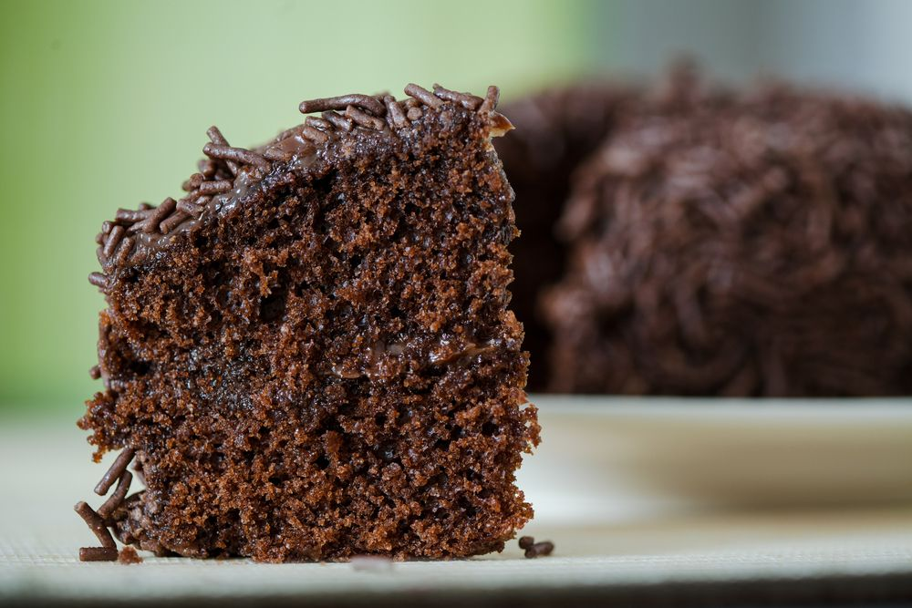

RECEITA BOLO DE CHOCOLATE
NO LIQUIDIFICADOR

🎂INGREDIENTES:
MASSA:
- 1 xicara (chá) de chocolate em pó
- 1 xicara (chá) de açúcar
- 2 xícaras (chá) de Farinha de Trigo
- 1 xicara (chá) de óleo
- 1 xicara (chá) de leite
- 2 ovos
- 1 colher (sopa) de fermento em pó
CALDA:
- 1 colher (sopa) de manteiga
- 3 colheres (sopa) de chocolate em pó
- 3 colheres (sopa) de açúcar
- 1 xicara (chá) de leite
🎂MODO DE PREPARO:
- Bata no liquidificador os ovos, o leite, o óleo, o chocolate e o açúcar.
- Coloque em um bowl e acrescente a farinha e o fermento.Misture delicadamente.
- Coloque em uma forma untada e leve para assar em forno preaquecido a 180°C por 30 min.
- Para a calda, misture todos os ingredientes em uma panela e leve para ferver.
- Assim que o bolo sair do forno, faça furinhos com o garfo e regue com a calda.
ALANIS BORGES DE MORAIS